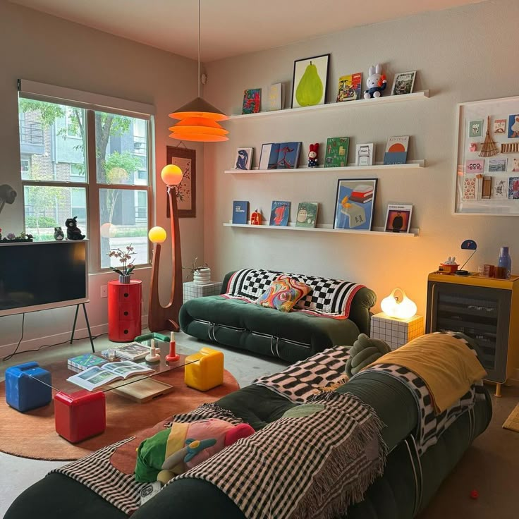

Estilo minimalista
El minimalismo es uno de los estilos de decoración de interiores que destaca por la extrema sencillez de las formas, los ambientes diáfanos, las formas geométricas básicas, las líneas puras y los colores neutros.
Estilo industrial
Inspirado en fábricas y naves industriales, el estilo industrial combina elementos modernos con materiales en bruto.
Estilo bohemio
Un estilo libre y creativo que refleja una vida artística y nómada, destacando por su mezcla de colores y texturas vibrantes.
Estilo ecléctico
Para los amantes de la diversidad, el eclecticismo es una opción perfecta. Este estilo conjuga en un mismo espacio diferentes épocas para crear una decoración única que desprende sello y impronta propia.
Estilo kitsch
Se caracteriza por el predominio del color y las formas y el uso de elementos antiestéticos y llamativos. Los tonos rosa chicle, azul cielo, rojo o verde manzana son muy habituales y las texturas son muy variadas: pieles sintéticas, alambre, plástico, vidrio y papel.
Estilo art deco
En los años 20 y 30, se popularizó este estilo, conocido por su elegancia y sofisticación gracias al uso de formas geométricas, materiales lujosos como el mármol y el vidrio, y colores vivos como el dorado, el negro y el rojo.
Estilo vintage
Basado en la nostalgia y apreciación por los objetos del pasado. Los espacios vintage apuestan por los muebles y accesorios antiguos, a menudo restaurados, para darles una segunda vida. Los colores son suaves y acogedores, con tonos pastel como el rosa, el azul o el verde.
Estilo retro
Un estilo inspirado en las décadas de los años 50, 60 y 70. Cargado de color y patrones, el estilo retro incluye una paleta de tonos vivos como el naranja, el verde y el amarillo. El mobiliario tiene formas redondeadas y con frecuencia incorpora materiales plásticos y vinilos.
Estilo rústico
Un esquema decorativo acogedor y cálido, basado en el uso de materiales naturales y muebles de madera natural, piedras y tejidos como lana y algodón. Y es que los espacios rústicos son cómodos y llenos de carácter. La paleta de colores incluye tonos tierra, beige y verde, que aportan una sensación de confort y bienestar.
Estilo náutico
Inspirado en el mar y en la vida costera, el estilo náutico crea espacios frescos y relajantes, gracias a una gama cromática que juega con los tonos neutros, blancos, azul y arena.